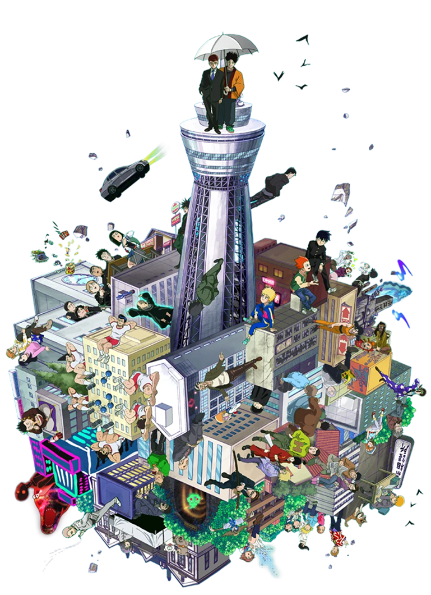
ORGANIZAÇÃO DE INVESTIGAÇÃO PARANORMAL
ALGUÉM PRECISA CUIDAR DO QUE NINGUÉM VÊ
Espíritos, poderes psíquicos e eventos sem explicação. A Psycho Association registra cada caso e agora precisa de você.


Espíritos, poderes psíquicos e eventos sem explicação. A Psycho Association registra cada caso e agora precisa de você.
Alguns são vistos. Outros, sentidos. Há aqueles que permanecem sem resposta.
Somos uma rede de investigadores que registra, classifica e acompanha casos paranormais. Cada relato enviado por um membro vira um arquivo, e cada arquivo nos aproxima de uma resposta.
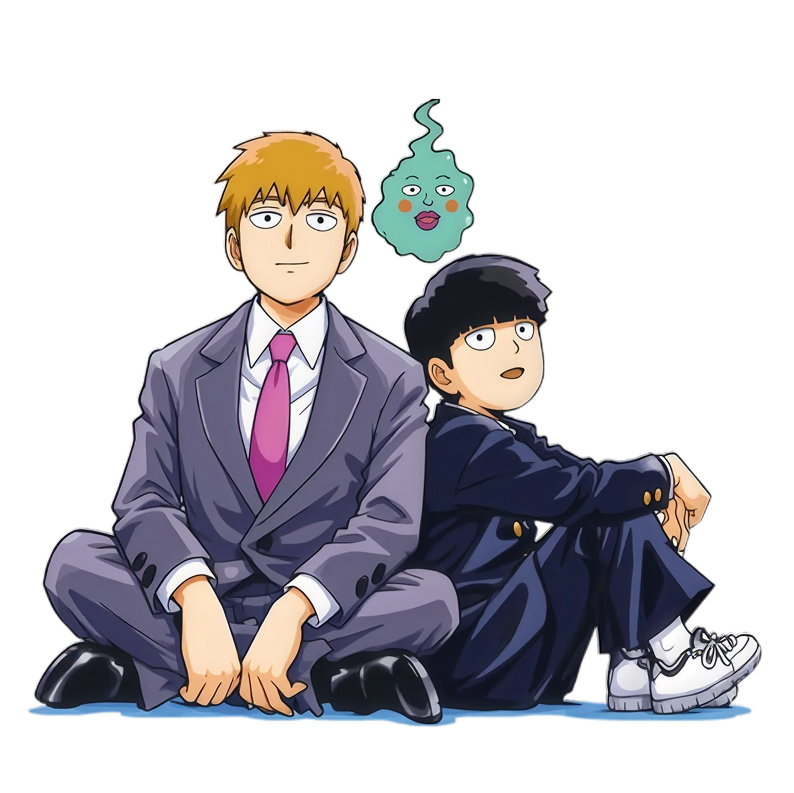
Telecinese, barreiras e explosões de energia. Quando alguém faz o impossível.
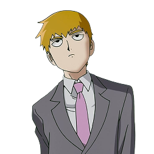
Prédios, escolas e becos com presença estranha. O lugar guarda mais do que mostra.
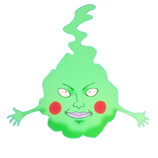
Assombrações e possessões. Alguns espíritos pedem ajuda, outros pedem exorcismo.
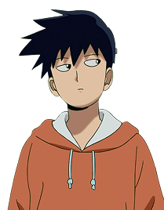
Grupos que usam o sobrenatural para fins duvidosos. Nem todo perigo vem do além.
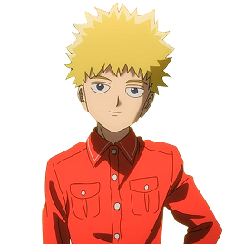
Basta curiosidade e vontade de investigar. Crie sua conta, descubra seu perfil paranormal e abra seu primeiro relatório de ocorrência.
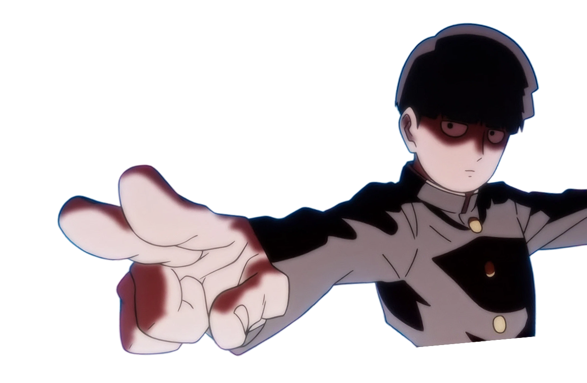
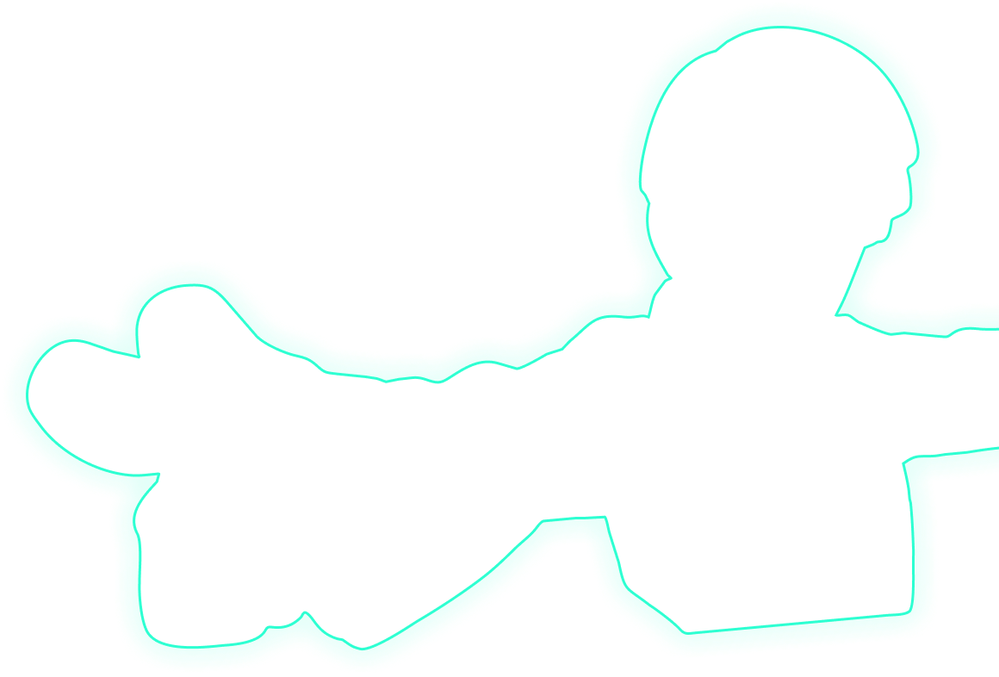
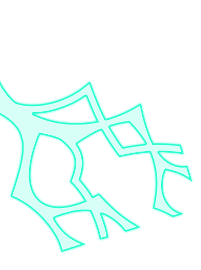